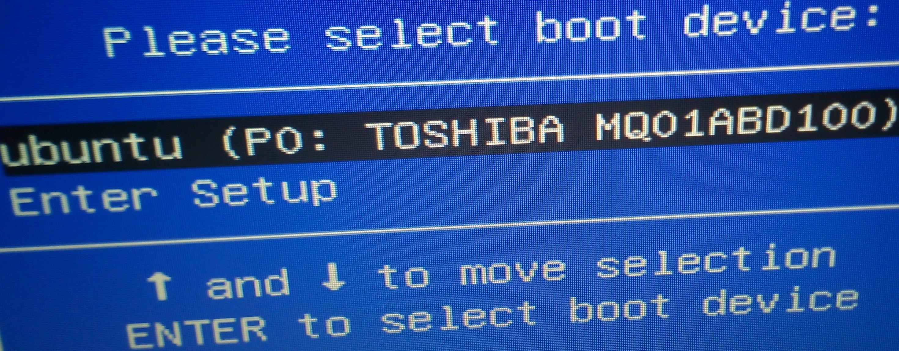
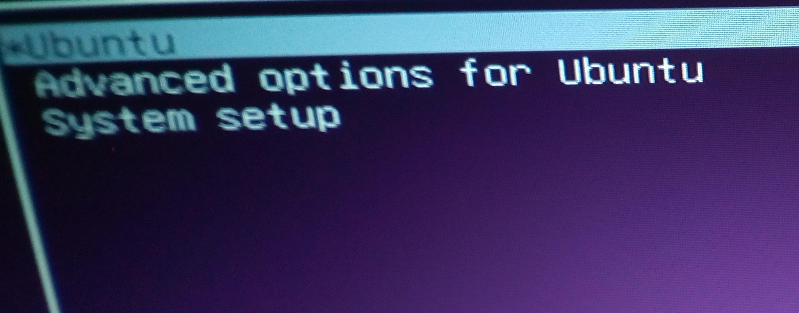
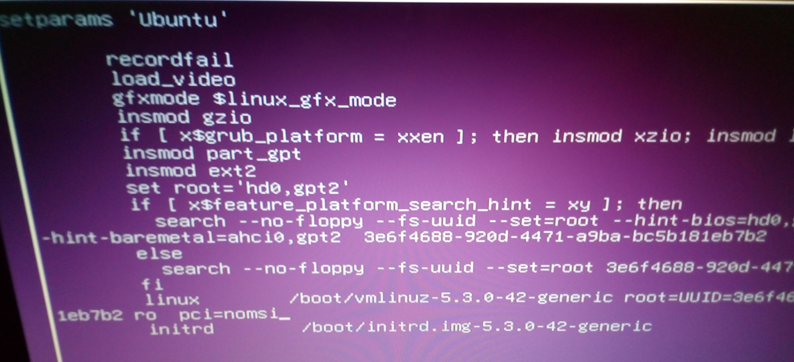

PCIe Bus Error: severity=Corrected problem after booting into Ubuntu
- This post is the mirror of my answer on StackOverFlow:
I always have the same issue when reinstall Ubuntu 18.04.4 with ASUS X555UQ Laptop.
Answers of this question on StackOverFlow helped me a lot about adding which parameter to /etc/default/grub/ but I can’t reach terminal (also tty), because after installing OS via live usb, it gives a blank screen(or mentioned issue) instead of login screen.
Then I thought that I have to get to the GRUB menu at boot-time so, according to this link how to get to the GRUB menu at boot-time, pressing esc while booting did not cause the GRUB menu to appear. It shows please select boot device section for me.

Then I pressed Enter to boot again and while booting, pressed esc again. Finally it reached to the GRUB menu and I pressed e to edit the commands(this page starts with set params 'Ubuntu'). Then I added pci=nomsi to end of the line starting with linux and pressed F10 to boot.


After this operation, I was able to reach login screen and terminal. Then I followed the @Ujjal Kumar Das’s answer on StackOverFlow and updated my /etc/default/grub/ file permanently.
Maybe this method works for the users who have the same laptop model like me. I like using Ubuntu, but this issue is so annoying every time.